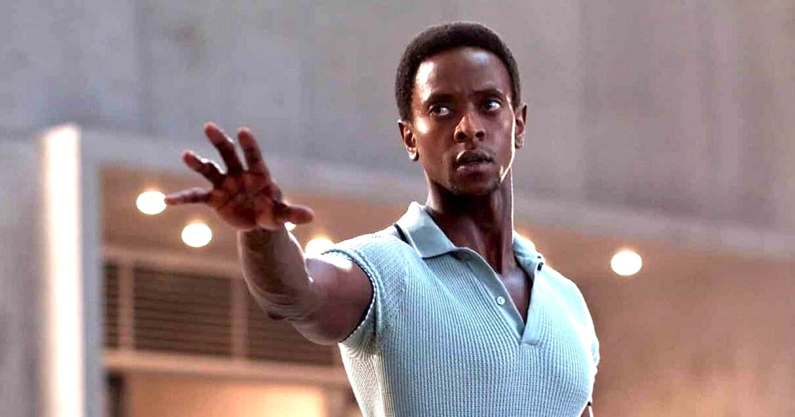

Darwin: X-Men First Class
After birth, Darwin's powers of self-protection and continuous circumstantial evolution made his mother hate him. The Afro-Hispanic[1] boy was found by scientists who experimented on him, bringing him to the attention of the public. He was found by Moira MacTaggert and recruited as one of her "fosters". He was in the first team, along with Kid Vulcan, Petra, and Sway to attempt to rescue the X-Men from Krakoa.

Edi Gathegi as Darwin in X-Men: First Class
Darwin has the power of "reactive evolution"; i.e., his body automatically adapts to any situation or environment he is placed in, allowing him to survive possibly anything; the exact nature and limits of his powers have not been revealed.
- The Rise and Fall of The Shi'ar Empire
- World War Hulk
- Messiah Complex
- Joining X-Factor
- Dawn of X
He appeared in all of these stories
"Adapt to survive and all."
-Darwin